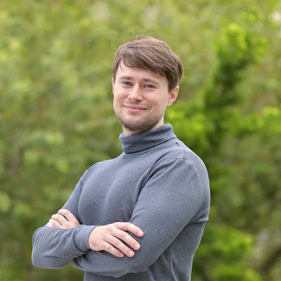

Andre Goderich 郭育賢
I am an associate professor of linguistics in the Department of English, National Changhua University of Education. My research mainly concerns the Atayal language in various aspects, including its historical development and synchronic phonology.